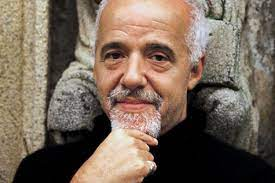

Пауло Коэльо — бразильскийпрозаик и поэт.
Родился 24 августа 1947 в Рио-де-Жанейро в благополучной семье инженера.
В семь лет он был отправлен в иезуитскую школу Святого Игнатия Лойолы, где впервые проявляется его желание писать книги.
Его отец был инженером, поэтому его с детства настраивали идти по стопам отца. Однако, у юноши были другие планы на жизнь – он твердо решил стать писателем. Родители восприняли это как протест и это привело к тому, что в возрасте 17 лет Пауло Коэльо попал в психиатрическую клинику. Через три года его выпустили после трех попыток побега.
Выйдя из клиники, Коэльо становится хиппи, основывает подпольный журнал «2001», на котором обсуждались проблемы духовности, Апокалипсис. Кроме того Пауло писал тексты анархических песен.
Рок-группа Raul Seixas сделал эти тексты такими популярными, что Коэльо в одночасье становится богатым и знаменитым.
Он продолжает искать себя: работает журналистом в газете, пытается реализоваться в театральной режиссуре и драматургии.
Выйдя из тюрьмы, Коэльо решает, что пришло время остепениться и стать нормальным человеком. Он перестает писать и делает карьеру в CBS Records. Но в один прекрасный день его увольняют без всяких объяснений.
В 1970 году начал путешествовать по Мексике, Перу, Боливии, Чили, Европе и Северной Африке.
Через два года Коэльо вернулся в Бразилию и начал сочинять стихи для песен, ставших потом очень популярными, работая с известными бразильскими исполнителями, такими как Рауль Сейшас.
Пауло Коэльо удостоен множества влиятельных международных наград, является членом Бразильской литературной академии (ABL).
Опубликовал в общей сложности 15 книг — романы, комментированные антологии, сборники коротких рассказов-притч.
В СНГ прославился после издания «Алхимика», долго остававшегося в первой десятке бестселлеров. Общий тираж на всех языках превышает 60 миллионов. Восприятие Коэльо неоднозначно и колеблется от неумеренного восхваления до полного уничижения.
Родился в Рио-де-Жанейро в благополучной семье инженера Педро и Лижии Коэльо. В семь лет он был отправлен в иезуитскую школу Святого Игнатия Лойолы, где впервые проявляется его желание писать книги. Желание стать писателем не нашло понимания у его семьи, поэтому под их давлением он поступает на юридический факультет университета Рио-де-Жанейро, но вскоре бросает учёбу и занимается журналистикой. В итоге разногласия между ним и семьёй шли по нарастающей, в конце концов семнадцатилетний Пауло был принудительно помещён на лечение в частную психиатрическую клинику. Ни лечение электрошоком, ни второй курс лечения не изменили его уверенности в себе — он сбежал из клиники, скитался некоторое время, в итоге вернулся домой.
Через год он примкнул к движению любительского театра, который в Бразилии 60-х годов стал массовым явлением — не только явлением искусства, но и социального протеста.
В итоге после третьего курса лечения его семья смирилась с тем, что «нормальной» работой он заниматься не будет.
Пауло Коэльо продолжал заниматься театром и журналистикой.
В 1970 начал путешествовать по Мексике, Перу, Боливии, Чили, Европе и Северной Африке. Через два года Коэльо вернулся в Бразилию и начал сочинять стихи для песен, ставших потом очень популярными, работая с известными бразильскими исполнителями, такими как Рауль Сейшас. Как он признаётся в одном из интервью, в это время он познакомился с работами противоречивого английского мистика, Алистера Кроули, повлиявшими на их сотрудничество. Оно распространилось не только на музыку, но и на планы создания «Альтернативного общества», которое должно было стать общиной анархистов в штате Минас-Жерайс, основанной на идее Кроули: «Делай что хочешь — таков весь закон».
Бразильские военные, пришедшие к власти в результате переворота 1964 года, посчитали этот проект подрывной деятельностью и заключили всех предполагаемых членов группы под стражу. Известно также, что во время пребывания в тюрьме Коэльо и Сейшаса пытали. Выйти из тюрьмы Коэльо неожиданно помогло прошлое: его признали невменяемым и отпустили.
После событий, описанных в «Валькириях», Коэльо покинул Общество.
Позднее, в Голландии, он встречает личность (называемую им «Джи» (лат. J) в «Валькириях», «Паломничестве» и на его сайте «Воин Света»), которая изменила его жизнь и посвятила в христианство. Он стал членом католической группы, известной как RAM (Regnus Agnus Mundi), где «Джи» был его «Учителем».
В 1986 году он прошёл Дорогой Сантьяго, старинным испанским путём паломников, и описал позднее всё произошедшее в книге «Дневник Мага».